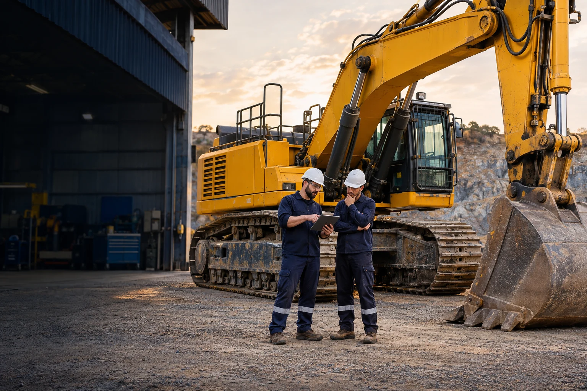

01
Mecânica da linha pesada
Entender como cada sistema funciona é a base para uma atuação técnica mais consistente.
- Fundamentos mecânicos
- Motores diesel e trem de força
- Sistemas hidráulicos e seus componentes

TREINAMENTO & CONSULTORIA · LINHA PESADA
Desenvolvemos pessoas para cuidar das máquinas.
Treinamentos em mecânica, manutenção e operação. Consultoria para os desafios da sua equipe.
01 / NOSSAS SOLUÇÕES
PESSOAS PREPARADAS. MÁQUINAS BEM CUIDADAS.Da compreensão dos sistemas à tomada de decisão em campo, conectamos o desenvolvimento da equipe aos desafios da linha pesada.
Entender como cada sistema funciona é a base para uma atuação técnica mais consistente.
Preparação para inspecionar, identificar desvios e executar cuidados com critério técnico.
Conhecimento do equipamento para unir técnica de operação, cuidado e segurança.
UM OLHAR TÉCNICO SOBRE O SEU CENÁRIO
Consultoria em operação e manutenção, com escopo construído a partir das necessidades da sua empresa.
Análise de práticas operacionais, cuidados com os equipamentos e oportunidades de desenvolvimento da equipe.
Apoio à organização de rotinas, inspeções, planejamento e acompanhamento da manutenção.
Identificação de necessidades de capacitação e definição de prioridades para a evolução das equipes.
O conteúdo e o escopo de cada trabalho são definidos conforme a equipe, os equipamentos e os objetivos da empresa.
02 / NOSSA ABORDAGEM
Um treinamento faz mais sentido quando conversa com o equipamento, a rotina e as dúvidas de quem está em campo.
Conhecer a equipe, os equipamentos e os desafios que motivam a capacitação ou a consultoria.
Alinhar objetivos, temas e formato para construir uma proposta adequada à necessidade.
Trabalhar conceitos técnicos com exemplos e situações do dia a dia da operação e da manutenção.
Consolidar os pontos trabalhados e indicar oportunidades para a continuidade do desenvolvimento.
Formação técnica em
máquinas pesadas.
03 / NOSSA FRENTE DE ENSINO
A CONTREM Academia reúne a identidade educacional da empresa: conhecimento técnico voltado a profissionais de mecânica, manutenção e operação da linha pesada.
Acessar a Academia →QUEM ESTÁ À FRENTE
A CONTREM nasce para aproximar treinamento e consultoria dos desafios de quem opera e mantém máquinas pesadas.
04 / VAMOS CONVERSAR
Conte o que sua empresa precisa. Comece pela área de interesse e pelos equipamentos envolvidos.
Treinamentos técnicos e consultoria
em operação e manutenção.